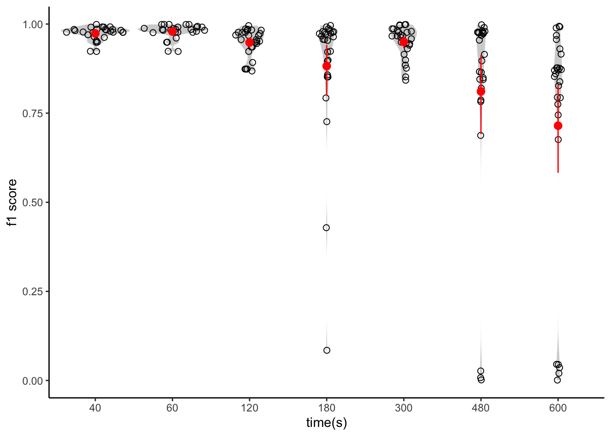
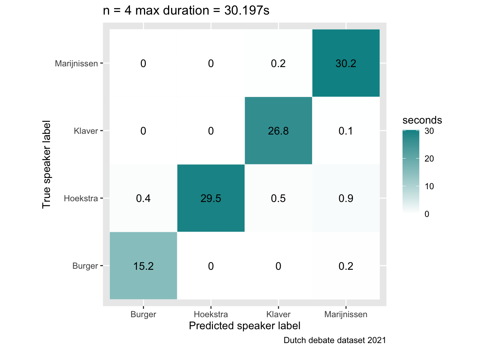

Mexca performance - audio
Mexca’s video subcomponent is based on Pyannote.audio 2.0. An open-source toolkit written in Python for speaker diarization. Pyannote.audio is based on PyTorch machine learning framework, and it comes with pre-trained models for speaker diarization, which we have used here.
In this notebook, we evaluate mexca/Pyannote performance on speaker diarization (who speaks when). We aim at answering the following questions:
Q1: Is performance affected by the number of speakers in a clip?
Q2: Is performance influenced by how long one speaks compared to the others?
The test dataset (unbalanced)
We have applied mexca’s audio pipeline on 42 audio files lasting from ~50 seconds to ~20 min and ranging from 2 to 7 individuals (the max number of speakers reported in the annotation file).
The audio files are made by selecting and concatenating audio files for each single speaker up to the max decided number.
This is an example of an audio featuring two individuals:
To better investigate whether the duration of the speaking time of each speaker would affect performance, speakers’ speaking duration is manipulated to follow an exponential distribution. For this reason, we refer to this dataset as inbalanced, i.e., speakers have different speaking time durations.
For example, in this file we have 7 speakers, and the max duration for the speaker who speaks the most is ~600s (10min).
Here we have the opposite extreme: 2 speakers, max duration ~40s
Read mexca’s output
df <- list.files(file.path("output_mexca"))
ded21 <- do.call(bind_rows, lapply(file.path("output_mexca", df), read.table, stringsAsFactors = T, header = F, sep = " ", dec = "."))
ded21$V10 <- NULL
colnames <- c("type", "file", "chnl", "tbeg", "tdur",
"ortho", "stype", "name", "conf")
names(ded21) <- colnames
ded21$max_duration <- as.integer(str_split(pattern = "_", ded21$file, simplify = T)[,4])
ded21$n_speaker <- as.integer(str_split(pattern = "_", ded21$file, simplify = T)[,3])
head(ded21) type file chnl tbeg tdur ortho stype
1 SPEAKER list_audio_2_120_unbalanced 1 0.498 81.996 <NA> <NA>
2 SPEAKER list_audio_2_120_unbalanced 1 49.283 3.139 <NA> <NA>
3 SPEAKER list_audio_2_120_unbalanced 1 53.097 3.864 <NA> <NA>
4 SPEAKER list_audio_2_120_unbalanced 1 81.245 27.979 <NA> <NA>
5 SPEAKER list_audio_2_180_unbalanced 1 0.498 29.768 <NA> <NA>
6 SPEAKER list_audio_2_180_unbalanced 1 30.873 173.070 <NA> <NA>
name conf max_duration n_speaker
1 SPEAKER_01 <NA> 120 2
2 SPEAKER_00 <NA> 120 2
3 SPEAKER_00 <NA> 120 2
4 SPEAKER_00 <NA> 120 2
5 SPEAKER_01 <NA> 180 2
6 SPEAKER_01 <NA> 180 2Load reference
ref_ded21 <- read.csv("unbalanced_dataset.csv", header = T, stringsAsFactors = T)
# filter out n_speaker == 1 as diarization can't work with 1 speaker
ref_ded21 <- ref_ded21[ref_ded21$n_speaker != 1,]
head(ref_ded21) type file chnl tbeg tdur ortho
42 SPEAKER dutch-debate-corpus\\ref_ded21_audio_0.wav 1 41 32 <NA>
43 SPEAKER dutch-debate-corpus\\ref_ded21_audio_1.wav 1 1362 16 <NA>
44 SPEAKER dutch-debate-corpus\\ref_ded21_audio_0.wav 1 77 30 <NA>
45 SPEAKER dutch-debate-corpus\\ref_ded21_audio_0.wav 1 109 33 <NA>
46 SPEAKER dutch-debate-corpus\\ref_ded21_audio_0.wav 1 77 30 <NA>
47 SPEAKER dutch-debate-corpus\\ref_ded21_audio_0.wav 1 381 44 <NA>
stype name conf tend audio_file max_duration n_speaker balanced
42 <NA> Marijnissen <NA> 73 ded21_audio_0 40 2 FALSE
43 <NA> Burger <NA> 1378 ded21_audio_1 40 2 FALSE
44 <NA> Hoekstra <NA> 107 ded21_audio_0 60 2 FALSE
45 <NA> Kaag <NA> 142 ded21_audio_0 60 2 FALSE
46 <NA> Hoekstra <NA> 107 ded21_audio_0 120 2 FALSE
47 <NA> Hoekstra <NA> 425 ded21_audio_0 120 2 FALSECast reference in correct time frame
Annotation’s time (tbeg column) is set to match the timing of the original video. We adjust this info to match mexca’s video files.
n_speaker <- unique(ref_ded21$n_speaker)
max_duration <- unique(ref_ded21$max_duration)
ref_ded21_corpus <- ref_ded21
reference_ded21_for_pyannote <- NULL
for (n in n_speaker){
for(t in max_duration){
# set first tbeg to 0
ref_ded21_corpus_temp <- ref_ded21_corpus |>
filter(n_speaker == n & max_duration == t)
ref_ded21_corpus_temp <- ref_ded21_corpus_temp |>
mutate(tbeg = replace(tbeg, 1, 0))
nrow_ref <- nrow(ref_ded21_corpus_temp)
for(x in 2:nrow_ref) {
# set tbeg from 2 row onwards tdur of the row before, i.e., tdur[x-1]
ref_ded21_corpus_temp[x,]$tbeg <- sum(ref_ded21_corpus_temp[x-1,]$tbeg,
ref_ded21_corpus_temp[x-1,]$tdur)
}
reference_ded21_for_pyannote <- bind_rows(reference_ded21_for_pyannote,
ref_ded21_corpus_temp)
}
}Assign speakers’ optimal mappings
Mapping between mexca’s and reference’s labels is obtained by using pyannote’s optimal mapping algorithm. We stored it in the column ‘mapped reference’.
df <- list.files(file.path("mexca_opt_mapping"))
opt_mapping <- do.call(bind_rows, lapply(file.path("mexca_opt_mapping", df), read.table, stringsAsFactors = T, header = F, sep = " ", dec = "."))
names(opt_mapping) <- c("pyannote_name", "mapped_reference", "file")
opt_mapping$n_speaker <- as.integer(str_split(opt_mapping$file,"_", simplify = T)[,3])
opt_mapping$max_duration <- as.integer(str_split(opt_mapping$file,"_", simplify = T)[,4])
names(ded21)[names(ded21) == "name"] <- "pyannote_name"
optimal_ded21 <- left_join(ded21, opt_mapping, by = c("file","pyannote_name", "max_duration", "n_speaker"))
head(optimal_ded21) type file chnl tbeg tdur ortho stype
1 SPEAKER list_audio_2_120_unbalanced 1 0.498 81.996 <NA> <NA>
2 SPEAKER list_audio_2_120_unbalanced 1 49.283 3.139 <NA> <NA>
3 SPEAKER list_audio_2_120_unbalanced 1 53.097 3.864 <NA> <NA>
4 SPEAKER list_audio_2_120_unbalanced 1 81.245 27.979 <NA> <NA>
5 SPEAKER list_audio_2_180_unbalanced 1 0.498 29.768 <NA> <NA>
6 SPEAKER list_audio_2_180_unbalanced 1 30.873 173.070 <NA> <NA>
pyannote_name conf max_duration n_speaker mapped_reference
1 SPEAKER_01 <NA> 120 2 Hoekstra
2 SPEAKER_00 <NA> 120 2 Klaver
3 SPEAKER_00 <NA> 120 2 Klaver
4 SPEAKER_00 <NA> 120 2 Klaver
5 SPEAKER_01 <NA> 180 2 Marijnissen
6 SPEAKER_01 <NA> 180 2 MarijnissenCompute precision, recall and f1
Now that we have the mapped_reference column, we can count how many times (in terms of speech segments overlap duration) the model has correctly or incorrectly predicted each speaker over its total speaking time.
# initialise file for plotting and matrix for storing confusion matrices
my2Dlist <- as.list(1:(length(n_speaker) * length(max_duration)))
dim(my2Dlist) <- c(length(n_speaker),length(max_duration))
my_confusion_2d <- as.list(1:(length(n_speaker) * length(max_duration)))
dim(my_confusion_2d) <- c(length(n_speaker),length(max_duration))for(i in 1:length(n_speaker)){
n <- n_speaker[i]
for(j in 1:length(max_duration)){
t <- max_duration[j]
speaker_ref_segments <- droplevels(
reference_ded21_for_pyannote[reference_ded21_for_pyannote$n_speaker == n & reference_ded21_for_pyannote$max_duration == t,]
)
speaker_pred_segments <- na.omit(droplevels(optimal_ded21[optimal_ded21$n_speaker == n & optimal_ded21$max_duration == t,]))
reference_speakers <- unique(speaker_ref_segments$name)
confusion_matrix <- as.matrix(table(levels(reference_speakers),
levels(reference_speakers)))
for (ref_speaker1 in reference_speakers){
sub_speaker_ref1 <- speaker_ref_segments[speaker_ref_segments$name == ref_speaker1,]
sub_speaker_pred1 <- speaker_pred_segments[speaker_pred_segments$mapped_reference == ref_speaker1,]
for(ref_speaker2 in reference_speakers){
sub_speaker_ref2 <- speaker_ref_segments[speaker_ref_segments$name == ref_speaker2,]
sub_speaker_pred2 <- speaker_pred_segments[speaker_pred_segments$mapped_reference == ref_speaker2,]
# compute speech segments overlap (in seconds) between mexca and the reference
confusion_matrix[ref_speaker1,ref_speaker2] <- calculate_overlap(sub_speaker_ref1, sub_speaker_pred2)
}
# store matrix
my_confusion_2d[[i,j]] <- confusion_matrix
# store plot
my2Dlist[[i,j]] <- confusion_matrix|>
as.data.frame()|>
ggplot(ggplot2::aes(Var1, Var2, fill = Freq)) +
geom_tile(
colour = "white",
lwd = 0.1,
linetype = 1) +
geom_text(aes(label = round(Freq,1))) +
scale_fill_gradient(low="white", high="#009194")+
coord_fixed()+
guides(fill = guide_colourbar(title = "seconds"))+
ylab("True speaker label")+
xlab("Predicted speaker label")+
labs(title = paste0("n = ", n, " max duration = ", max(confusion_matrix), "s" ),
caption="Dutch debate dataset 2021")+
theme(legend.position="right")
}
}
}At this point we’re ready to compute the f1 score for each speaker, in each dataset, and store it in the F1_total dataframe.
F1_total <- data.frame()
for(i in 1:nrow(my_confusion_2d)){ #n of speakers
for(j in 1:ncol(my_confusion_2d)){ # max_duration
n <- n_speaker[i]
t <- max_duration[j]
speaker_ref_segments <- droplevels(reference_ded21_for_pyannote[reference_ded21_for_pyannote$n_speaker == n & reference_ded21_for_pyannote$max_duration == t,])
confusion_matrix <- my_confusion_2d[[i,j]]
reference_speakers <- colnames(confusion_matrix)
F1 = data.frame(
speakers = reference_speakers,
max_duration = NA,
f1_score = NA,
n_speakers = n,
file = t
)
for (k in reference_speakers){
F1[F1$speakers==k,]$f1_score <- compute_f1(confusion_matrix, k)
# append speakers' individual max duration
F1[F1$speakers==k,]$max_duration <- sum(speaker_ref_segments[speaker_ref_segments$name == k,]$tdur)
}
F1_total <- bind_rows(F1_total, F1)
}
}head(F1_total) speakers max_duration f1_score n_speakers file
1 Burger 16 0.9642710 2 40
2 Marijnissen 32 0.9813802 2 40
3 Hoekstra 30 0.9988658 2 60
4 Kaag 33 0.9989691 2 60
5 Hoekstra 82 0.9518148 2 120
6 Klaver 28 0.8683892 2 120F1 score distribution
F1 score as a function of the number of speakers. Each dot is a speaker with its own speaking time duration (~40, ~60, ~120, ~180, ~300, ~480, ~600). F1 scores close to 0 imply perfect confusion, F1 scores close to 1 imply perfect identification.
ggplot(F1_total, aes(as.factor(n_speakers), f1_score))+
geom_violin(fill = "lightgray", col = NA)+
geom_sina(shape = 21, size = 2)+
scale_y_continuous(breaks=seq(0, 1, 0.2), limits=c(0, 1))+
ylab("f1 score")+
xlab("number of people talking in total")+
theme_classic()+
stat_summary(fun.data="mean_cl_boot", color="red")We can see that the performance is very high, and it looks constant across n except for some instances (10 speakers/datapoints).
Let’s inspect more closely each speaker:
ggplot(F1_total, aes(as.factor(speakers), f1_score)) +
geom_violin(fill = "lightgray", col = NA) +
geom_sina(shape = 21, size = 2) +
ylab("f1 score") +
xlab("speaker") +
theme_classic() +
stat_summary(fun.data="mean_cl_boot", color="red")
It is evident that the poor performance in those datapoints can be easily attributed to two speakers (Klaver and Wilders) and for 1 instance in Burger. Apart from Burger (that it might be just bad luck), this plot suggests that f1_score seems to be influenced more by the singular features of the speakers rather than the total number of speakers.
Let’s look now at whether speaking time has any influence:
ggplot(F1_total, aes(as.factor(file), f1_score)) +
geom_violin(fill = "lightgray", col = NA) +
geom_sina(shape = 21, size = 2) +
ylab("f1 score") +
xlab("time(s)") +
theme_classic() +
stat_summary(fun.data="mean_cl_boot", color="red")
F1 score decreases at longer speaking time.
Confusion matrices
for(i in 1:length(n_speaker)){
for(x in 1:length(max_duration)){
print(my2Dlist[[i,x]])
}
}



Q1: Is performance affected by the number of speakers in the audio?
Answer: No. Performance is constant across speakers (i.e., it is not influenced by n). When performance breaks down it doesn’t do it uniformly, the model occasionally fails to recognise particular speakers (e.g., Klaver) while the rest remain well classified.
Q2: Is performance influenced by how long one speak compared to the others?
Answer: Yes. Performance decreases for speakers whose speaking time is over ~8 min.
Conclusion: Our results suggest that the audio pipeline can be safely used for any number of speaker (up to the tested number of 7) without decreasing in performance, however seems likely to be affected by how long one speaks compared to the others. To be sure though, one needs to analyse also a more balanced dataset (e.g., whereby each speaker speaks the same amount of time).